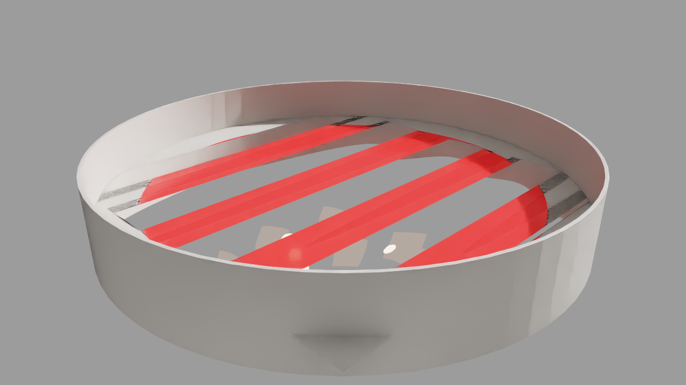
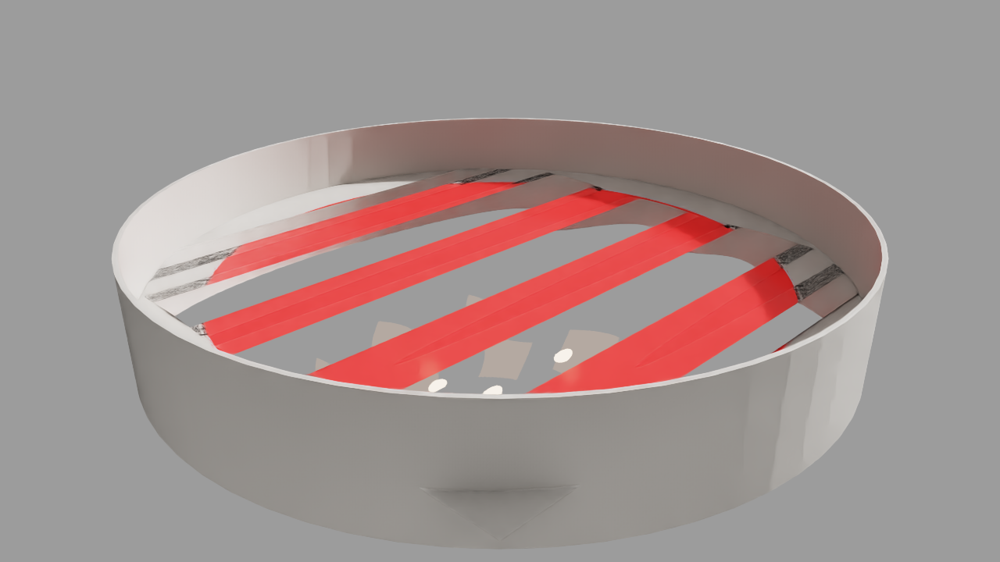
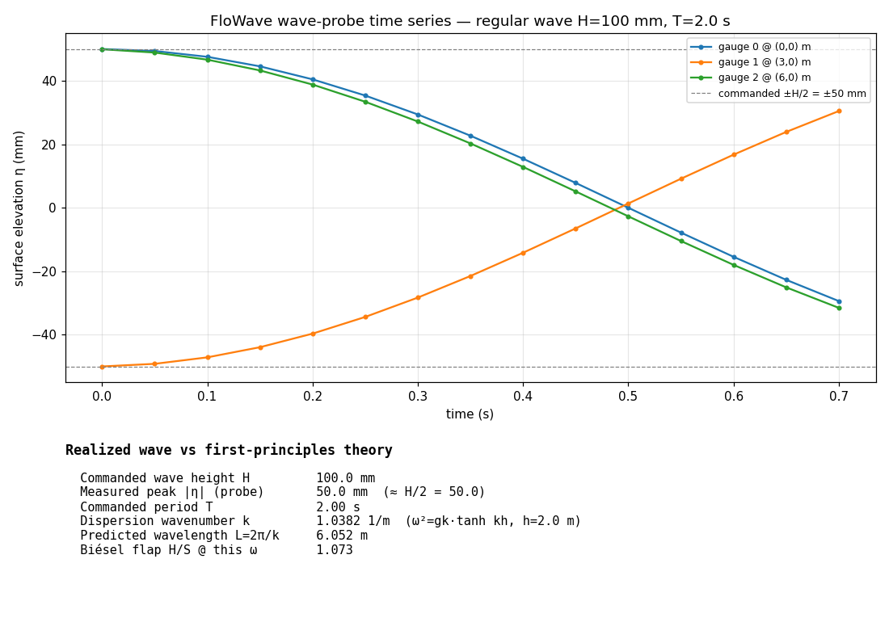

OceanScale FloWave — Isaac Sim 6 RTX Wave-Generation Render
Real Isaac Sim 6.0 RTX render of a paddle-driven wave tank (headless, RTX 5090).
Wave Animation
Rendered Frames
Red diagonal bands are the wave crests on the water surface.


Wave-Probe Validation

Surface elevation at three gauges vs first-principles theory.
Results
| Commanded wave height H | 0.10 m |
|---|---|
| Commanded period T | 2.0 s |
| Dispersion wavenumber k | 1.038 1/m |
| Wavelength L = 2π/k | 6.05 m |
| Dispersion relation | ω² = g·k·tanh(k·h), h = 2 m, g = 9.81 |
| Biésel bottom-hinged flap H/S | 1.073 |
| Measured probe peak |η| | 50 mm (= H/2, matches command) |
| Renderer | Isaac Sim 6.0, RTX RayTracedLighting |
| Render | headless, RTX 5090, 15 frames @ 1280×720 |
| Tests | 106 passed (physics + acceptance + no-regression) |